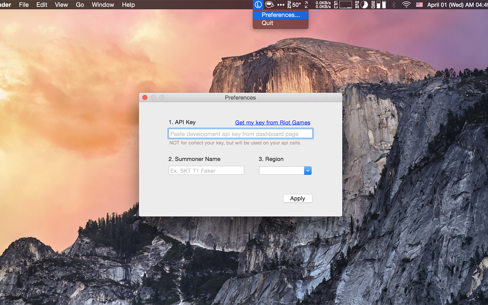

Just it works.
It just appears when the game starts. You don't have to open browser and search any sites.
All you have to do is enter your summoner name.
Support dark menu.
FAQ
"Should I open this application each time before start a game?"
No, you don't have to. Open System Preferences panel and Users & Groups > Login Items > press + button for add startup item.
"I'm having some issues. What should I do?"
Please submit an issue on GitHub.